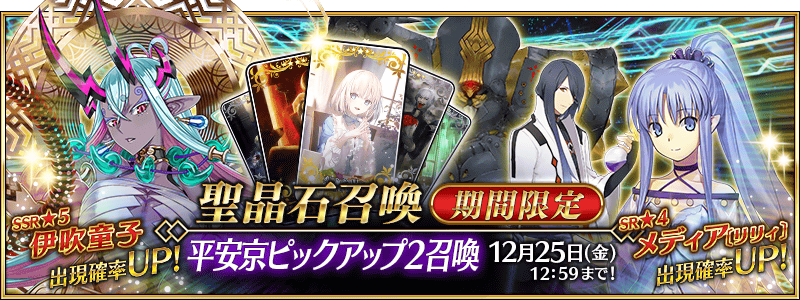
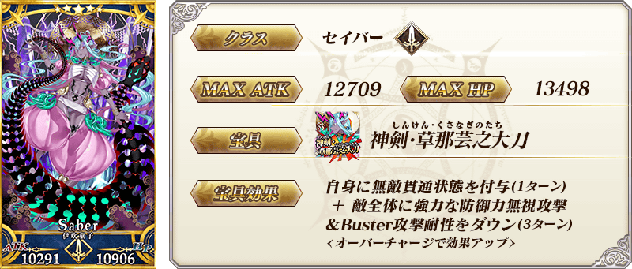
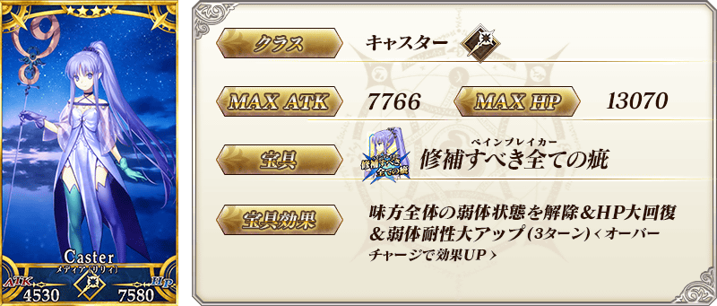
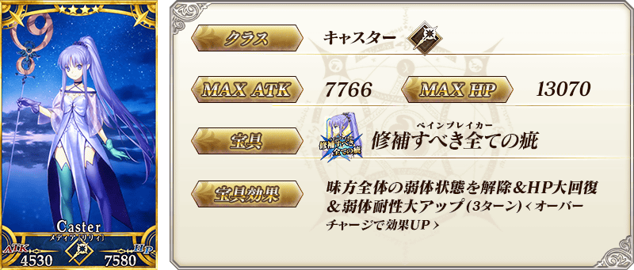
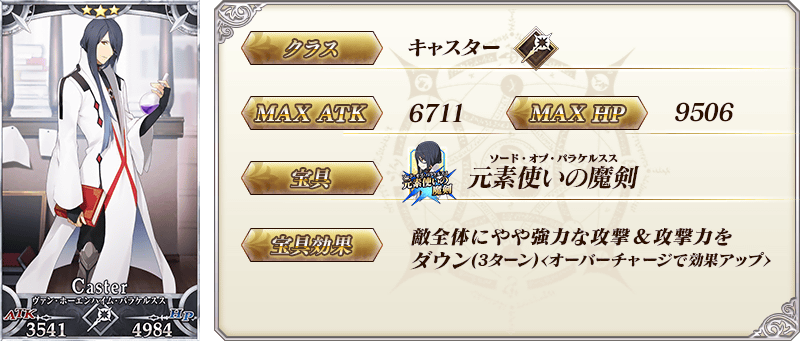
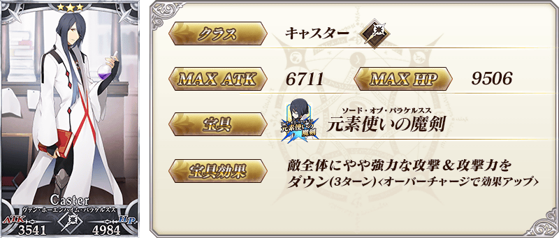
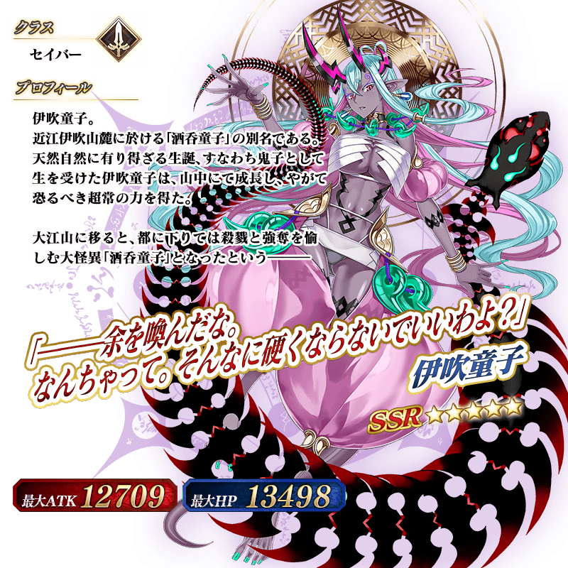
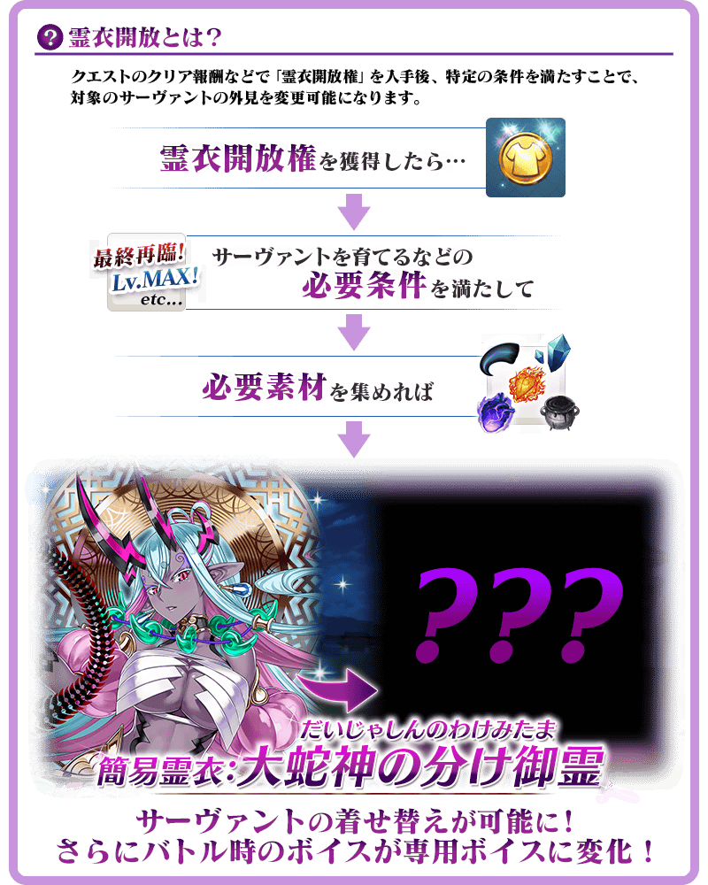
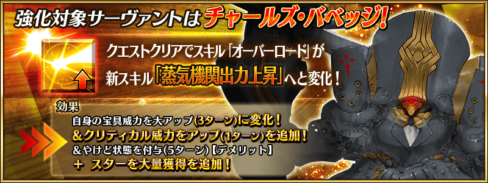

◆「平安京Pick Up2召喚」期間◆
期間:2020年12月11日(五) 17:00～12月25日(五) 11:59
期間限定「平安京Pick Up2召喚」舉辦！
※就算未滿足主線關卡開放條件的狀態也能進行本召喚。
自「地獄界曼荼羅 平安京 轟雷一閃」，包含1位新登場從者的下述從者Pick Up！
▼期間限定從者
・★5(SSR)伊吹童子
▼Pick Up從者
・★4(SR)美狄亞〔Lily〕
・★3(R)馮・霍恩海姆・帕拉塞爾斯
・★3(R)查爾斯・巴貝奇
另外，在「平安京Pick Up召喚」先行新登場的下述的概念禮裝也登場！
・★5(SSR)恋のお呪い
・★4(SR)王者の気質
・★3(R)神の舌
Pick Up期間中，Pick Up對象從者的出現機率提升！
詳情請在聖晶石召喚畫面左下的召喚詳細確認。
11次召喚中確定1張★4(SR)以上和確定1位★3(R)以上的從者！ ※確定★4(SR)以上包含從者和概念禮裝。 ※本頁面皆為開發中圖片。會有與實際圖片相異的情況。
◆有關從者的注意◆
※下述的從者在Pick Up期間結束後不會追加到故事召喚。
・★5(SSR)伊吹童子
※本召喚的Pick Up期間中，透過故事進行所追加的下述從者就算通過各章前也能入手。
・★4(SR)美狄亞〔Lily〕
※下述的從者在Pick Up期間結束後仍會在故事召喚被抽出。
・★4(SR)美狄亞〔Lily〕
・★3(R)馮・霍恩海姆・帕拉塞爾斯
・★3(R)查爾斯・巴貝奇
◆有關概念禮裝的注意◆
※下述的概念禮裝的出現機率不會提升。
・★5(SSR)恋のお呪い
・★4(SR)王者の気質
・★3(R)神の舌
※下述的概念禮裝自2020年12月18日(五) 12:00，追加到故事召喚。
・★5(SSR)恋のお呪い
・★4(SR)王者の気質
・★3(R)神の舌
※配合翻新，下述的概念禮裝本召喚中成為召喚對象外。
・★3(R)デイ・アフター
※2020年12月18日(五) 12:00以後，下述的概念禮裝也不會從故事召喚被抽出，追加至友情點數召喚。
・★3(R)デイ・アフター

 ※上述「★5(SSR)伊吹童子」的卡面為靈基再臨第3階段。
 
※上述「★4(SR)美狄亞〔Lily〕」的卡面為靈基再臨第1階段。

※上述「★4(SR)美狄亞〔Lily〕」的卡面為靈基再臨第1階段。
 
※上述「★3(R)馮・霍恩海姆・帕拉塞爾斯」的卡面為靈基再臨第1階段。

※上述「★3(R)馮・霍恩海姆・帕拉塞爾斯」的卡面為靈基再臨第1階段。

 ※上述「★3(R)查爾斯・巴貝奇」的卡面為靈基再臨第1階段。
※上述「★3(R)查爾斯・巴貝奇」的卡面為靈基再臨第1階段。
 ※上述「★5(SSR)伊吹童子」的立繪為靈基再臨第3階段。
介紹「★5(SSR)伊吹童子」的寶具演出！
在「Fate/Grand Order」官方網站內的公告中，以影片公開寶具演出，敬請確認。
介紹「★4(SR)美狄亞〔Lily〕」的寶具演出！
在「Fate/Grand Order」官方網站內的公告中，以影片公開寶具演出，敬請確認。
「★5(SSR)伊吹童子」的靈衣開放權在「地獄界曼荼羅 平安京 轟雷一閃」登場！
通過「地獄界曼荼羅 平安京 轟雷一閃」所有的主線關卡後會出現可獲得靈衣開放權的關卡！
另外，想靈衣開放的話，除了靈衣開放權外再加上必須滿足一些開放條件。
※請注意在靈衣獲得關卡沒有文字冒險部份。
◆開放時間◆
2020年12月11日(五) 17:00～
◆有關靈衣開放權的注意◆
※「★5(SSR)伊吹童子」的簡易靈衣一部份語音會隨著外觀變化。
※未持有「★5(SSR)伊吹童子」的情況，可入手靈衣開放權。但無法進行靈衣開放。


「靈衣開放」是自強化畫面進行。
※「靈衣開放」後會自動切換戰鬥角色和圖示。若想回到「靈衣開放」前的狀態和變成其他再臨階段的情況，可自從者詳細畫面變更。 ※進行「靈衣開放」不會讓職階和能力等有所變化。
強化「★3(R)查爾斯・巴貝奇」的特別關卡「從者強化關卡」，在迦勒底之門永久追加。
不僅進行對象從者的強化，也可獲得聖晶石做為關卡通過報酬。
※從者強化關卡請注意在沒有文字冒險部份。
◆追加時間◆
2020年12月11日(五) 17:00～
◆開放條件◆
持有的強化對象從者，必須使其最終再臨。
※未持有對象從者的話，不會出現關卡。
※關卡沒有舉辦期限。

其他關於
・主線關卡第2部 第5.5章「地獄界曼荼羅 平安京 轟雷一閃」
・期間限定「平安京Pick Up召喚」
的詳情，請自下述橫幅確認。
■第2部 第5.5章「地獄界曼荼羅 平安京 轟雷一閃」詳細情報

■「平安京Pick Up召喚」詳細情報